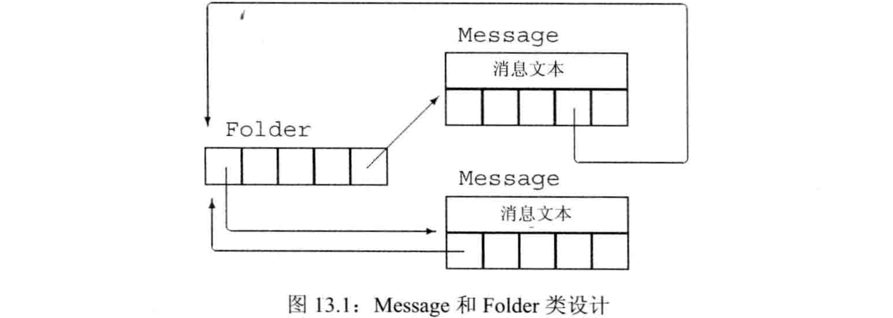

C++ primer 第13章 拷贝控制
文章目录
- 定义一个类时，可显式或隐式的指定在此类型对象上
拷贝、移动、赋值、销毁时做什么。通过5种成员函数实现拷贝控制操作：拷贝构造函数：用同类型的另一个对象初始化本对象时做什么（拷贝初始化）拷贝赋值算符：将同类型的另一个对象赋值给本对象时做什么（拷贝赋值）移动构造函数：用同类型的另一个对象初始化本对象时做什么（移动初始化）移动赋值算符：将同类型的另一个对象赋值给本对象时做什么（移动赋值）析构函数：本对象销毁时做什么（析构）
- 如果类未定义这些拷贝控制成员，编译器会自动合成一部分缺失的操作，因此很多类不需要自定义拷贝控制。最困难的经常是认识到什么时候需要自定义拷贝控制：编译器合成版本的行为可能并非预期。
拷贝、赋值与销毁
拷贝构造函数
拷贝构造函数：这种构造函数的第一个参数是自身类类型的引用，且任何额外参数都有默认值。- 拷贝构造函数的第一个参数必须是引用类型（否则传参时需要拷贝，循环调用）。虽然也可定义为非const，但几乎总是用
const引用（不会改变被拷贝对象，且const引用能接受更多类型的参数）。 - 拷贝构造函数经常会被隐式使用（例如函数的传参和返回值），故不应该是
explicit - 若未自定义拷贝构造函数，即使定义了其他构造函数，编译器也会合成一个拷贝构造函数（这一点与默认构造函数不同）
合成的拷贝构造函数若非删除，则会将其参数的非static成员逐个拷贝到正在构造的对象中：- 内置类型：直接拷贝
- 类类型：用拷贝构造函数来拷贝
- 数组：逐元素拷贝（若元素是类类型，也用拷贝构造函数）
- 例子：合成的拷贝构造函数
|
|
- 直接初始化和拷贝初始化的差别：
直接初始化：要求编译器使用普通函数匹配来选择最匹配的构造函数拷贝初始化：要求编译器将=右侧运算对象拷贝到正在创建的对象中，需要时可进行隐式转换
- 例子：直接初始化和拷贝初始化
|
|
- 拷贝初始化的工具：
拷贝构造函数：通常使用拷贝构造函数移动构造函数：如果该类有移动构造函数且用右值调用时
- 拷贝初始化发生的情况:
- 用
=定义变量 - 将对象作为实参传递给非引用类型的形参
- 从返回类型非引用的函数返回对象
- 用花括号列表初始化一个数组的元素或一个聚合类的成员
- 某些类类型会对其分配的对象使用拷贝初始化。例如初始化标准库容器或是调用
insert/push时容器对元素进行拷贝初始化，而用emplace是对元素直接初始化
- 用
- 使用explicit的构造函数时，只能直接构造，不能拷贝构造（即，explicit的构造函数不可用于拷贝构造）
- 传递实参或返回值时，不能隐式使用explicit构造函数，必须显式使用
- 例子：explicit的构造函数不可用于拷贝构造
|
|
- 拷贝初始化时，编译器可以（但不是必须）跳过拷贝/移动构造函数，直接创建对象。但即使编译器跳过拷贝/移动构造函数，他们仍必须是存在且可访问的（例如不能是private）
- 例子：跳过拷贝/移动构造函数，直接创建
|
|
拷贝赋值运算符
- 类可通过拷贝构造函数来控制初始化，也可通过
拷贝赋值算符来控制对象赋值 重载算符本质上是函数，其名字是operator关键字后接要定义的算符的符号。- 赋值算符是名为
operator=的函数，它也有返回类型和参数列表 - 某些算符，包括赋值算符，必须定义为成员函数。若算符是成员函数，则其
左侧对象隐式绑定到this指针。对于二元算符，例如赋值算符，其右侧对象作为显式参数传递。 - 拷贝赋值算符接受一个与其所在类型相同的参数，返回左侧运算对象的引用（为与内置类型的赋值保持一致）。
- 标准库通常要求容器元素的类型有赋值算符，且返回值是左侧对象的引用，因为很多操作会拷贝元素。
- 若未自定义拷贝赋值算符，编译器会合成一个
合成的拷贝赋值算符若非删除，则会将右侧对象的每个非static成员赋予左侧对象的对应成员（类类型成员调用拷贝赋值算符，数组成员逐个赋值）。它返回一个指向左侧对象的引用- 例子：合成拷贝赋值算符
|
|
析构函数
- 析构函数执行与构造函数相反的操作：构造函数初始化对象的非static数据成员并执行函数体，析构函数执行函数体并销毁对象的非static数据成员
析构函数的名字是波浪线~后接类名，它没有返回值也不接受参数，故不可重载，一个类只能有一个析构函数- 构造函数和析构函数的共性和差异：
- 构造函数有一个显式的初值列表和一个函数体；析构函数有一个函数体和一个隐式的析构部分。
- 构造函数先做成员初始化再执行函数体，成员按照类中出现的顺序初始化；析构函数先执行函数体再销毁成员，成员按照初始化的逆序销毁。
- 析构函数的析构部分是隐式的，成员如何销毁完全取决于类型：类类型成员析构时调用析构函数，内置成员析构时什么都不做，特别是，析构内置指针成员不会delete它指向的对象。
- 对象被销毁时调用析构函数：
- 变量离开作用域被销毁
- 类对象被销毁时成员被销毁
- 标准库容器/数组被销毁时，元素被销毁
- 动态对象的指针被delete时对象被销毁
- 临时对象，创建它的完整表达式结束时被销毁
- 析构函数自动运行，故程序可按需分配资源，无需担心何时释放（前提是析构函数良好定义）
- 例子：析构函数自动运行
|
|
- 若未自定义析构函数，编译器会合成一个
合成析构函数若非删除，则其函数体为空，只有隐式的析构部分。- 析构函数体并不直接销毁成员，成员是在析构函数体执行之后的隐式析构阶段被销毁。
三/五法则
- 三个基本操作可控制类的拷贝：
拷贝构造函数、拷贝赋值算符、析构函数。C++11中还定义了移动构造函数和移动赋值算符 - 这5个操作不必全部定义，可以只定义一两个。但这些操作经常是一个整体，需要同时定义。
需要自定义析构函数的类也需要自定义拷贝和赋值- 若一个类需要自定义析构函数（如管理动态对象），几乎肯定它也需要自定义拷贝和赋值操作
- 例子：需要析构函数时使用默认的拷贝和赋值（反例）
|
|
需要自定义拷贝操作的类也需要自定义赋值操作，反之亦然- 需要自定义拷贝和赋值时，不一定需要自定义析构函数。例如，为类的每个对象生成编号
使用=default
- 将拷贝控制成员定义为
=default可显式要求编译器生成合成的版本。只能对具有合成版本的成员函数使用（构造函数和拷贝控制成员） - 例子：使用=default
|
|
阻止拷贝
- 大多数类应该定义默认构造函数、拷贝构造函数、拷贝赋值算符，无论显式还是隐式。但对某些类，这些操作并无意义。例如iostream不可拷贝。
- 若要阻止一个操作（例如禁止拷贝），不定义是无效的，因为编译器会合成。正确做法是将其定义为删除函数
删除函数是这样一种函数：虽然定义了，但不可以任何形式使用。C++11可将拷贝构造函数和拷贝赋值算符定义为删除来阻止拷贝。- 定义删除函数的方法是在参数列表后将其定义为
=delete，它通知编译器，我们不希望定义这些成员。 =delete和=default的区别：- =delete必须出现在第一次声明时，而=default只需在定义时给出。因为编译器在函数声明时就必须知道它是否为删除的，以便禁止使用它
- =delete可对任意函数使用，而=default只能对编译器能合成的函数使用
- 不能删除析构函数。若删除析构函数则无法销毁此类型对象。
- 删除析构函数的情形：
- 对于删除了析构函数的类，编译器不允许对该类型定义变量/临时对象
- 若类的类类型成员删除了析构函数，则该类也不能定义变量/临时对象。
- 对于删除了析构函数的类，可以分配该类型的动态对象，只是不能释放
- 例子：删除析构函数的类可分配动态对象
|
|
- 对某些类的某些拷贝控制成员，编译器将合成的成员定义为删除函数。本质上，这些规则的含义是：若类有数据成员不可默认构造、拷贝、赋值、销毁，则该类对应的成员函数被定义为删除：
- 删除合成析构函数：
- 类某成员的析构函数是删除的或不可访问
- 删除合成拷贝构造函数：
- 类某成员的拷贝构造函数是删除的或不可访问
- 类某成员的析构函数是删除的或不可访问（可能创建无法销毁的对象）
- 删除合成拷贝赋值算符：
- 类某成员的拷贝赋值算符是删除的或不可访问
- 类有const成员或引用成员（可给引用成员赋值，但改变的是底层共享对象，不是期望结果）
- 删除默认构造函数：
- 类某成员的析构函数是删除的或不可访问
- 类的引用成员没有类内初始值
- 类的const成员没有类内初始值且类型未显式定义默认构造函数
- 删除合成析构函数：
- C++11之前，阻止拷贝控制的方法是将拷贝构造函数和拷贝赋值算符
声明为private且不定义- 声明为private，保证类外拷贝时在编译期报错
- 声明但不定义，保证友元和成员函数拷贝时在链接期报错
- 例子：通过声明为
private且不定义来阻止拷贝
|
|
- 希望阻止拷贝的正经操作是定义拷贝构造函数和拷贝赋值算符为=delete
拷贝控制和资源管理
- 管理类外资源的类通常需要定义拷贝控制成员，因为它需要析构函数来释放资源，几乎肯定也需要拷贝构造函数和拷贝赋值算符
拷贝语义：有2种选择，可定义拷贝操作使类的行为看起来像值或指针行为像值的类：每个对象有自己的资源。拷贝一个像值的对象时，副本和原对象完全独立。改变副本不会改变原对象，反之亦然。行为像指针的类：所有对象共享资源。拷贝一个像指针的对象时，副本和原对象使用相同的底层数据。改变副本会改变原对象，反之亦然。
- 标准库容器和string的行为像值，shared_ptr的行为像指针，IO类型和unique_ptr不允许拷贝/赋值故不像值也不像指针
行为像值的类
- 为了提供类值的行为，对于类管理的资源，每个对象都应有一份拷贝。
赋值算符通常组合了析构函数和构造函数的操作（销毁左侧对象类似析构，从右侧对象拷贝/移动类似构造），且应保证执行顺序正确，可处理自赋值。如果可能，还要保证异常安全。自赋值安全：先拷贝右侧对象资源，再销毁左侧对象资源异常安全：先分配空间存放临时资源，再改变左侧对象状态
- 最佳实践：定义赋值算符的步骤：
- 将右侧对象的资源拷贝出来
- 释放左侧对象的资源
- 让左侧对象接管从右侧对象拷出的资源
- 例子：类值版本的HasPtr
|
|
定义行为像指针的类
- 对于行为像指针的类，需为其定义拷贝构造函数和拷贝赋值算符，来拷贝指针成员本身而不是它管理的底层资源
- 令一个类行为像指针的最好办法是用
shared_ptr来管理类内的资源 引用计数的工作方式：- 每个
构造函数（除拷贝构造函数外）都会创建独立的计数器（经常放在动态内存中），记录有多少对象与正在创建的对象共享数据。每个计数器初始化时都为1。 拷贝构造函数不创建新的计数器，而是拷贝数据成员（包括指向计数器的指针），并将共享的计数器递增。析构函数递减计数器，若计数为0则销毁底层数据。拷贝赋值算符递增右侧对象的计数，递减左侧对象的计数。若左侧对象计数为0则销毁其底层数据
- 每个
- 计数器被保存在动态内存中，每次调用构造函数（除拷贝构造函数外）创建一个对象时都分配新的计数器。拷贝或赋值对象时，拷贝指向计数器的指针，使得副本和原对象共享相同的计数器。
- 赋值运算必须处理
自赋值。实现方式是先递增右侧对象的计数再递减左侧对象的计数（检查是否为0之前递增） - 例子：类指针版本的HasPtr，手动实现引用计数
|
|
交换操作
- 除定义拷贝控制成员外，管理资源的类通常还需定义
swap函数（非成员）。对于与重排元素顺序的算法一起使用的类而言，swap函数很重要。这类算法需要在交换两元素时调用其类型的swap函数。若未自定义swap，则算法调用标准库定义的swap - 交换两个对象，需要
一次拷贝和两次赋值，即swap建立在拷贝控制之上 swap时尽量交换指针，而不是分配新的副本- 例子：交换对象时需要一次拷贝和两次赋值
|
|
- 在类中将swap声明为友元函数，即可重载出该类型的swap
- 自定义swap不是必须的，但对于管理资源的类，自定义swap可能是很重要的优化手段
- swap经常被声明为
inline以提高性能 - 例子：自定义swap友元函数
|
|
- 不同版本的swap：
- 对于内置类型，没有特定版本的swap，使用std::swap即可
- 对于类类型，应使用重载的swap，即使用swap而不是std::swap
- 最佳实践：
using std::swap;允许使用标准库的swap，使用时用swap尽量选择最匹配的自定义swap - 定义了swap的类可用
swap实现赋值算符，使用拷贝并交换技术，传参时拷贝右侧对象，将左侧对象与右侧对象的形参副本交换。 - 例子：用swap实现拷贝赋值算符
|
|
- “拷贝并交换”技术是
自赋值安全且是异常安全的：- 改变左侧对象之前就拷贝右侧对象，保证自赋值安全
- 唯一可能抛出异常的是拷贝右侧对象时的new，但这发生在改变左侧对象之前
拷贝控制示例
- 例子：使用拷贝控制进行簿记操作。每个Message可出现在多个Folder中，每个Folder也可容纳多个Message，但每个Message的内容只有一个副本。如图13.1 
- 具体实现：
- 每个Message保存一条内容和一个它所在的Folder指针的
set，每个Folder保存一个它容纳的Message指针的set - Message类提供
save和remove操作，用于给定Folder添加/删除这个Message - Folder类提供
addMsg和remMsg操作，用于在该Folder中添加/删除一个Message 拷贝Message时，除拷贝消息内容和Folder指针集合外，还要在容纳它的所有Folder中添加指向新Message的指针析构Message时，除析构Message对象外，还要在容纳它的所有Folder中删除指向它的指针- 将一个Message
赋值给另一个Message时，除更新左侧对象的内容外，还要从容纳左侧对象的Folder中删除左侧对象，并在容纳右侧对象的Folder中添加左侧对象
- 每个Message保存一条内容和一个它所在的Folder指针的
- 拷贝赋值算符通常执行拷贝构造函数和析构函数的工作，此时可定义公共的操作放在private中
- 代码：
|
|
动态内存管理类
- 某些类在运行时需分配可变大小的内存空间，一般可使用标准库容器来保存可变数据，也可自定义拷贝控制成员来管理动态内存
- vector的每个添加元素的成员函数都会检查空间是否足够。若足够则在下一个位置构造元素，若不够则重新分配空间，将已有元素移动到新空间中并释放旧空间，再添加元素
- 例子：使用拷贝控制实现vector的内存分配
- alloc静态成员是allocator对象，用于获得原始内存并用construct/destroy创建和删除元素
- 3个指针成员界定内存的3个边界，如图13.2
- 函数alloc_n_copy分配内存并拷贝给定范围的元素
- 函数free销毁元素并释放内存
- 函数reallocate在内存用完时重新分配
- 函数chk_n_alloc保证至少有空间容纳一个新元素，如果没有就调用reallocate分配更多空间
- 代码：
|
|
- 重新分配vector的空间时，使用
移动而不是拷贝元素。 - 若类定义了
移动构造函数，则可将资源从给定对象移动（而不是拷贝）到正在创建的对象，并保证移后源对象处于有效的、析构安全的状态。 std::move函数定义于utility头文件，在移动构造时对输入对象调用std::move表示希望使用移动构造函数，否则使用拷贝构造函数。- 通常不对std::move使用using声明，直接用std::move限定调用标准库中的版本。
对象移动
- 允许移动而非拷贝对象，是C++11最主要的特性之一。
- 某些时候，对象
拷贝后立即销毁不再使用（例如vector重新分配空间），此时用移动代替拷贝会大幅提高性能 - 某些类包含
不可被共享的资源（例如IO类、unique_ptr不可被拷贝），这些类的对象不可拷贝但可移动
- 某些时候，对象
- 旧标准的标准库容器只能存放可拷贝的元素，C++11后只需可移动即可放入容器
右值引用
- 右值引用在C++11被引入以支持移动操作。
右值引用是必须绑定到右值的引用，通过&&而不是&来获得。右值引用只能绑定到将要被销毁的对象，故可将右值引用的资源安全地移动到另一个对象- 左值表达式表示的是对象的身份，右值表达式表示的是对象的值
左值引用：不可绑定到要求转换的表达式、字面值常量、返回右值的表达式右值引用：可引用的范围与左值引用相反，可绑定到上述表达式，但不可绑定到左值- 左值例子：能用&取地址的表达式、返回左值引用的函数/表达式、赋值、下标、解引用、前置递增/递减、字符串字面值
- 右值例子：返回非引用的函数、算术、关系、位、后置递增/递减、除字符串外的所有字面值
- 例子：右值引用
|
|
- 左值有持久的状态，右值要么是字面值常量，要么是表达式求值过程中创建的临时对象
- 右值引用只能绑定到临时对象，它所引用的对象将要销毁，且该对象没有其他用户。因此
使用右值引用的代码可自由地接管引用对象的资源 - 变量是特殊的表达式，变量表达式都是左值。因此不可将右值引用绑定到右值引用类型的变量（右值引用类型的变量也是左值）
std::move函数可将左值显式转换为它对应的右值引用类型，它定义于utility头文件- std::move告诉编译器：希望将这个左值（
移后源对象）当作右值来处理。处理完后，除对它赋值或销毁外，不应进行任何操作，特别是不可使用它的值（未定义）。 - 使用std::move时应显式指明std::作用域，避免潜在的命名冲突
移动构造函数和移动赋值运算符
- 自定义
移动构造函数和移动赋值算符可让类型支持移动操作 - 移动构造函数的第一个参数是该类类型的
右值引用，且任何额外参数都必须有默认实参 - 除完成资源移动外，移动构造函数必须确保移后源对象处于
析构安全的状态，即销毁它对程序没有任何影响。特别是，一旦完成移动，移后源对象不应该再管理被移动的资源。 - 例子：移动构造函数
|
|
noexcept通知编译器，该函数不会抛出任何异常，出现在形参列表和初始化列表的冒号之间。- 移动构造函数不需要分配新内存，只修改管理权限而不分配新资源，不会抛出异常
- 通知编译器不会抛出异常，可减少处理异常的开销（例如标准库容器处理元素时，为异常安全会优先用拷贝而不是移动）
- 使用noexcept时必须在函数声明和定义中都说明noexcept
- 不抛出异常的移动构造函数和移动赋值算符都必须标记为noexcept：
- 拷贝构造可处理异常，移动构造不可处理异常（拷贝时先拷出再修改对象，抛出异常在修改对象之前。移动的过程就是修改原对象的过程，无法处理异常）
- 因此，对于移动构造函数可能抛出异常的元素，容器都会用拷贝而不是移动来处理它们（例如vector重新分配时使用拷贝而不是移动）
- 只有告诉容器：移动构造函数不会抛出异常，可安全使用，它才会移动
移动赋值算符执行与析构函数和移动构造函数相同的操作- 移动赋值算符处理
自赋值的方法：判断this指针是否等于右侧对象的地址（即判断右侧是否是std::move产生的左侧对象的右值）。 - 例子：移动赋值算符
|
|
- 从对象移动数据不会销毁此对象，但有时移动后会将原对象销毁。因此必须保证移后源对象可析构，实现方式是将其指针成员置为
nullptr - 移动操作必须保证移后源对象是可析构的，且是有效的（可为其赋予新值或可安全使用而不依赖当前值）。移后源对象的值是未定义的，不应该对其值有任何假设
- 若类自定义了拷贝构造函数、拷贝赋值算符或析构函数，则编译器不会合成移动构造函数和移动赋值算符。
- 若一个类没有移动操作，类会使用对应的拷贝操作来代替移动操作（通过函数匹配）
- 编译器
合成移动构造函数和移动赋值算符的情形：当一个类未自定义任何拷贝控制成员，且每个非static成员都可移动时。（内置类型成员都可移动，类类型成员若有移动操作也可移动） - 移动操作永远不会被隐式定义为删除函数，但若显式要求生成
=default的移动操作且编译器无法移动所有成员时，编译器会将移动操作定义为删除的。 - 将合成的移动操作定义为删除的情形:
- 移动构造函数被定义为删除的条件：
- 类成员自定义了拷贝构造函数但未自定义移动构造函数
- 类成员未自定义拷贝构造函数且编译器不能合成移动构造函数
- 类成员的移动构造函数被定义为删除的或不可访问
- 类的析构函数被定义为删除的或不可访问
- 移动赋值算符被定义为删除的条件：
- 类成员自定义了拷贝赋值算符但未自定义移动赋值算符
- 类成员未自定义拷贝赋值算符且编译器不能合成移动赋值算符
- 类成员的移动赋值算符被定义为删除的或不可访问
- 类有成员是const的或是引用
- 移动构造函数被定义为删除的条件：
- 若移动操作可能被定义为删除，编译器就不会合成它们
移动与拷贝相互作用：- 若类自定义了移动构造函数和/或移动赋值算符，则类的合成拷贝构造函数和合成拷贝赋值算符被定义为删除（因此
自定义了移动的类必须自定义拷贝） - 若类自定义了拷贝构造函数、拷贝赋值算符或析构函数，则编译器不会合成移动构造函数和移动赋值算符。
- 若类自定义了移动构造函数和/或移动赋值算符，则类的合成拷贝构造函数和合成拷贝赋值算符被定义为删除（因此
- 若类既有移动操作又有拷贝操作，则编译器使用函数匹配规则来判断调用哪个。
左值拷贝，右值移动 - 例子：左值拷贝，右值移动
|
|
- 拷贝操作一般将输入定义为const引用的一个原因是：当输入为右值时可隐式转换为const引用。
- 当类有拷贝构造函数但没有移动构造函数，且使用右值构造时，
T &&到const T &的隐式转换可保证拷贝构造函数被调用，即用拷贝代替移动。赋值算符同理 - 用拷贝操作代替移动操作几乎肯定是安全的，一般拷贝操作满足对应移动操作的要求（但反之不可）
- 例子：用拷贝代替移动
|
|
- 用
swap实现赋值算符时使用的拷贝并交换技术，这样得到的赋值算符既可当作移动赋值算符也可当作拷贝赋值算符（因为形参非引用，传参存在临时量，可根据实参类型决定拷贝/移动构造） - 例子：“拷贝并交换技术”实现
拷贝赋值算符和移动赋值算符共享实现
|
|
- 更新的
三/五法则：所有5个拷贝控制成员应看作一个整体，一般定义了一个就应定义所有5个（定义移动的目的是避免额外开销，有拷贝需求的类一般也有移动需求）。 - 例子：为13.4的Message类定义移动操作
|
|
- 用allocator移动初始化动态内存时，一般用construct结合循环逐个元素移动构造。若能用
uninitialized_copy一次移动一个迭代器范围将更简单。 迭代器适配器通过修改给定迭代器的解引用*算符来改变迭代器的行为。- C++11定义了
移动迭代器适配器。普通迭代器的解引用得到左值引用，移动迭代器的解引用得到右值引用。 make_move_iterator函数将一个普通迭代器转换为移动迭代器，它接受一个普通迭代器作为参数，返回对应的移动迭代器。原迭代器的所有操作在移动迭代器中都照常工作。- 可将移动迭代器传递给算法，特别是，可用uninitialized_copy一次移动初始化多个元素
- 例子：重写13.5的reallocate函数
|
|
- uninitialized_copy对输入序列的每个元素调用construct来构造，该函数用迭代器的解引用算符从输入序列中取元素。传递移动迭代器时construct使用右值引用来构造
- 标准库不保证哪些算法可使用移动迭代器。移动对象将原对象置于可析构，故只有确信算法为元素赋值或将其传递给用户定义的函数后不再访问它时，才能向其传递移动迭代器
- 调用std::move时必须绝对确认移后源对象没有其他用户，且只有确信需要移动且移动是安全的时候，才可调用std::move
右值引用和成员函数
- 除拷贝控制成员外，普通成员同时提供拷贝和移动版本也可得到优化。方法是提供两个版本的重载：拷贝版本接受指向
const的左值引用，移动版本接受指向非const的右值引用 - 例子：定义了push_back的容器有拷贝和移动两个版本
|
|
- 定义拷贝和移动版本时，不需要为函数操作定义接受
const T &&或是T &的版本。因为移动应改变对象，不能const；拷贝不应改变对象，应该const - 例子：为13.5的StrVec定义拷贝和移动版本的push_back
|
|
- 允许在右值对象上调用成员
- 允许向右值赋值（为维持后向兼容）
- 例子：在右值对象上调用成员，向右值赋值
|
|
- C++11允许使用
引用限定符来强制算符的左侧运算对象（即this对象）是左值或右值。 - 引用限定符置于参数列表后，可以是
&/&&，分别指出this应指向左值/右值 - 引用限定符只能用于非static成员函数，且必须同时出现在声明和定义中
- 例子：引用限定符
|
|
- 函数可同时使用const和引用限定符，此时限定符必须在const之后
- 可使用引用限定符来区分重载版本，且可综合const和引用限定符来区分重载版本
- 例子：用const和引用限定符来区分重载版本
|
|
- 用const重载（形参相同的）成员函数时，可定义有const和无const两个版本
- 用引用限定符重载（形参相同的）成员函数时，必须对所有版本都使用不同限定符（不能一个用而另一个不用）